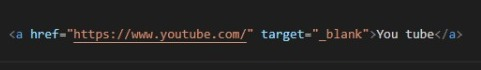
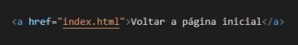

Através da tag de links, podemos direcionar os usuários para qualquer página que queiramos. Podemos direcioná-los para páginas destintas dentro do nosso projeto ou ainda direcioná-los para páginas externas, ou adicionar imagens, gifs, figuras no nosso código. A tag utilizada para links é "a" seguida do href="" entre aspas, é dentro dessas aspas que vai o caminho do link. Quando adcionamos um link ele, por padrão, abre na mesma página, se quisermos que o link seja aberto uma uma nova guia, usamos a tag target="_blank".
Um exemplo de um link que é aberto em seu próprio documento é o que consta no final da página, para voltar a página inicial. Agora vou incluir um link para um site externo:
You tubeImagem do código para link externo, com a extensão de abrir numa nova página.
Imagem do código para link interno, para abrir na própria página.
